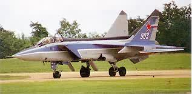
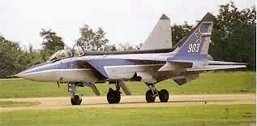
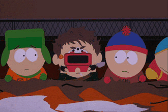
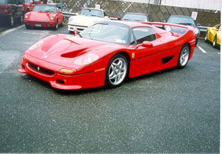
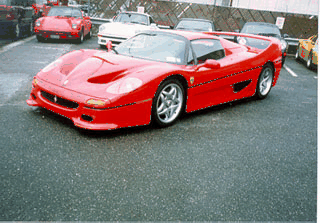

Disciplina: Classificação e Pesquisa de dados
Professor: Manuel Oliveira
Autores: Mairo Pedrini
Paulo Sérgio Morandi Júnior
Nosso trabalho visa reduzir a quantidade de cores utilizadas por imagens bitmap de 24 bits (totalizando 16 milhões de cores) para 256 cores. Preferencialmente, recomendamos o uso de imagens bitmap de tamanho 320x200, se desejar visualizar a figura na tela primeiramente, pois é gerado um arquivo após a conversão chamado "saida.bmp". A configuração necessária é ter um computador que tenha MS-DOS instalado e, dependendo da quantidade de cores inicialmente utilizadas pelo bitmap, MUUUUUITAAAA MEMÓRIA RAM
Inicialmente utilizamos uma lista encadeada para fazer a leitura das cores do bitmap, o que tornou o processo MUITO lento (custo O(n2) para inserção). Pensamos então em utilizar uma estrutura de dados que fosse mais robusta, e propiciasse um menor tempo de construção, pois, além da construção estar lenta, o processo de redução das cores também era dispendioso. Solução encontrada: Arvores AVL. Logo, durante a leitura, as cores são estruturadas em arvore AVL, é construída uma nova árvore AVL mas agora ordenada por freqüência. Nossa intenção inicial era de utilizar árvores AVL em todos os passos do algoritmo, pois seus custos de inclusão, exclusão e pesquisa são menores do que os de uma lista encadeada comum mas, ao iniciarmos a implementação do algoritmo, nos deparamos com a falta de conhecimento técnico para implementar o algoritmo de exclusão em árvores AVL. Desta forma, o que nos restou fazer foi converter a árvore AVL de freqüências em uma lista encadeada (eliminando, ao menos, o custo de ordenar a lista). O cálculo utilizado na redução das cores, aplicado em cada componente (vermelho, verde e azul) é uma média aritmética das cores que se quer "eliminar" e da melhor aproximação, utilizando-se a freqüência das mesmas como fator de ponderação.
No arquivo antigo.zip o programa main.exe apenas executa a leitura do bitmap em tons de cinza e apresenta na tela. Este arquivo é apenas para mostrar o ganho de velocidade que se obteve ao usar árvores AVL, ao invés de lista lineares (pelo menos na parte de leitura).
antigo.zip| ANTES | DEPOIS |
| 3829 cores | |
|  |  |
| 15856 cores | |
|  | |
| 10604 cores | |
|  |  |
| 16765 cores | |